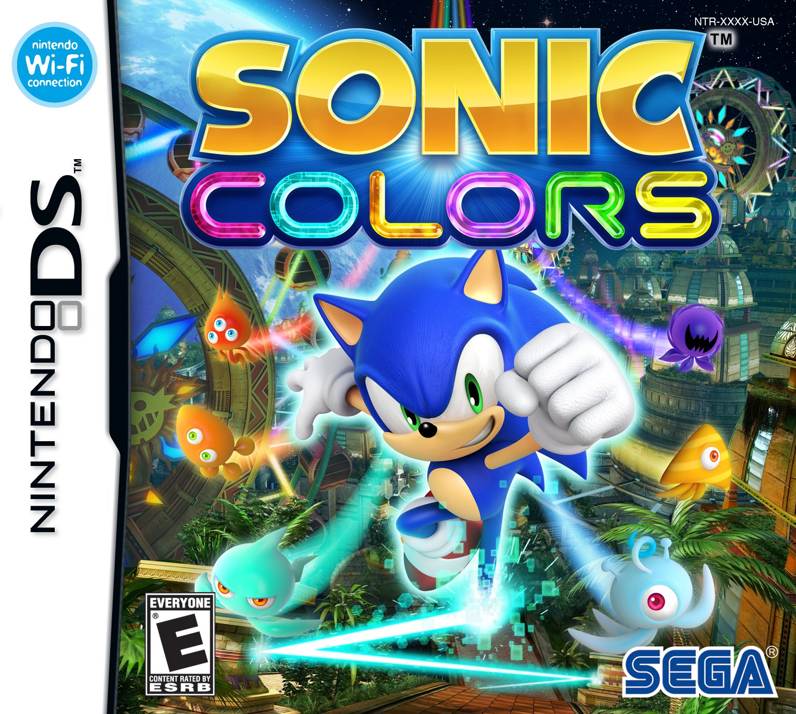

Sonic Colors
Es uno de los primeros juegos que jugué, ya que lo tuve en Nintendo DS, donde fue su primera aparición. También salió en Wii, pero en mi opinión es mejor la versión de DS por una simple razón: el Super Sonic. En la de DS sí importaba conseguir las esmeraldas del caos, porque te daba un nivel secreto muy bueno; en la de Wii solo era una transformación y ya, no se sentía tan importante.